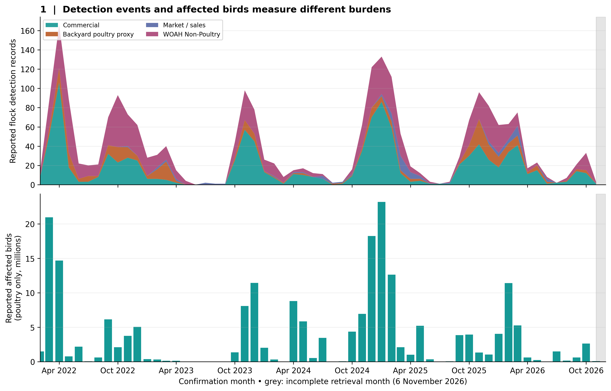
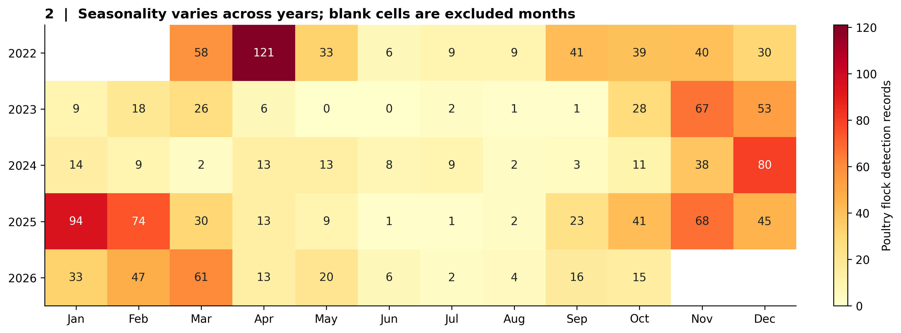
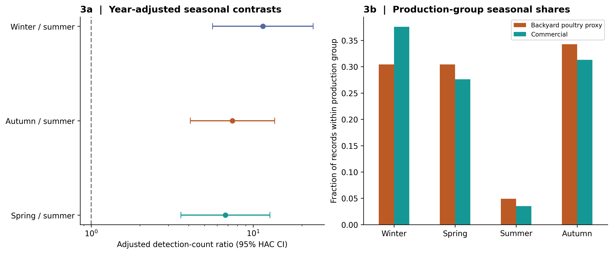
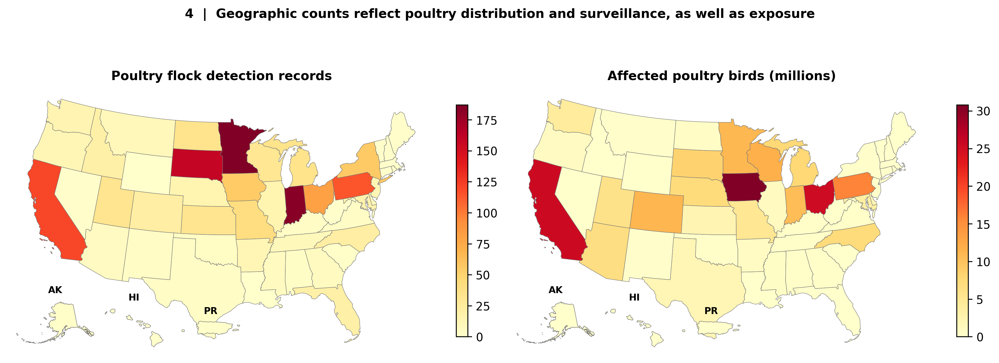
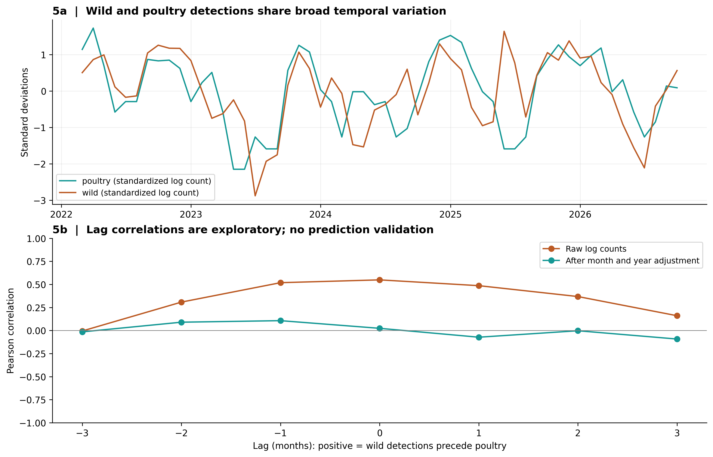
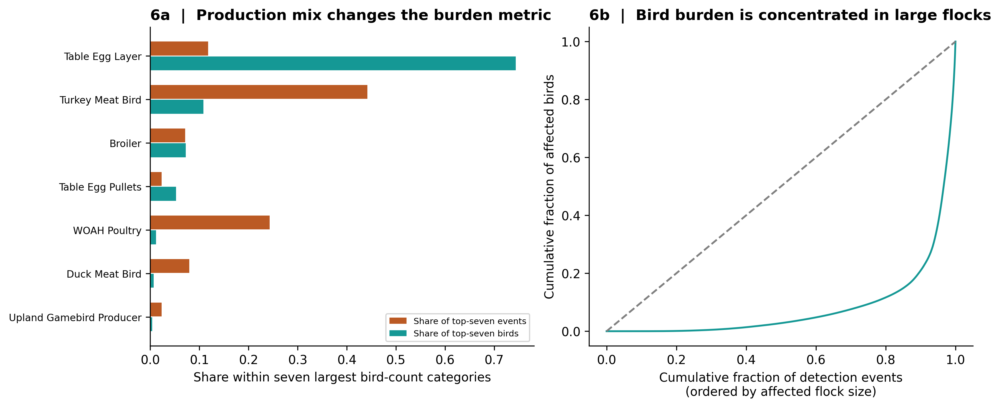
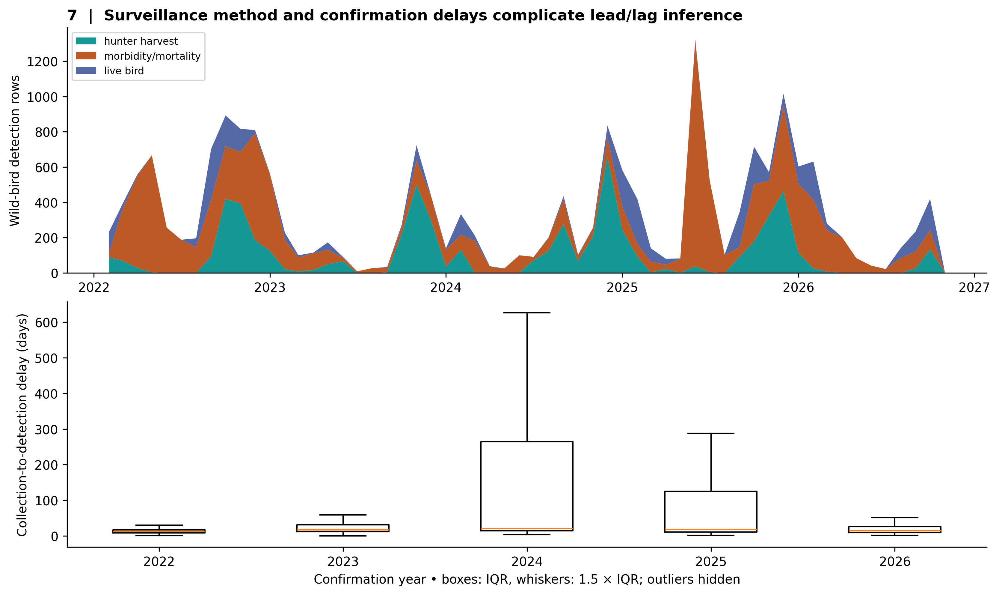
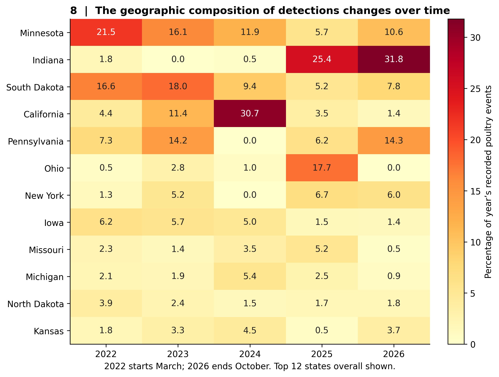

An executed observational investigation • USDA APHIS snapshots retrieved 6 November 2026 • Analysis window: March 2022–October 2026
We downloaded official APHIS poultry and wild-bird detection records and investigated seasonal patterns, production-group differences, geographic composition and wild-bird temporal associations. The domestic-bird export contains 2,300 detection records from 8 February 2022 to 4 November 2026; 1,426 meet our poultry definition, representing 211.62 million reported affected birds. The separate wildlife file contains 20,539 rows through 27 October 2026. In 56 complete months, year-adjusted spring and autumn poultry detection counts per day were 6.74 (95% CI 3.58–12.70) and 7.46 (4.09–13.59) times summer counts. The exploratory winter contrast was 11.49 (5.61–23.50). Production-group seasonal differences were small in the pooled window but changed materially when restricting to full calendar years. Geographic composition varied strongly across years. A one-month wild-bird lead was not supported after calendar-month and year adjustment. These are patterns of confirmed detection and reported flock size, not estimates of infection incidence or causal effects.
APHIS confirms HPAI detections in commercial, backyard and other domestic birds. The ongoing U.S. commercial-poultry event began in February 2022. Its public dashboard mixes production categories, so defining the outcome is essential. APHIS describes a relationship between seasonal wild-bird movement and poultry detections. We examine how consistently that description fits the downloaded records rather than assuming a fixed seasonal curve. [1]
Independent sequence-based work identifies repeated wildlife introductions into domestic birds, providing biological context for examining joint timing. Aggregate surveillance counts cannot reproduce phylogenetic transmission reconstruction. [3]
The dated analysis plan was saved before computing outbreak summaries, after inspecting the existing workspace CSV schema and first rows and reading background sources. This was not a registered preregistration. Negative-binomial sensitivity, detailed production/year inspection and the surveillance-delay investigation were added after inspecting initial results.
The official APHIS Tableau dashboard’s default CSV returned a four-month backyard summary, which was rejected as a historical event source. Its “X - Table by Confirmation Date” crosstab was successfully downloaded through the public browser interface, yielding all 2,300 rows. The third-party mirror already present in the repository was not used in the final analysis. Wild-bird data were downloaded directly from the CSV wired to APHIS’s official wildlife page. State boundaries came from the U.S. Census Bureau’s 2024 1:20 million cartographic shapefile. Raw bytes, SHA256 hashes, retrieval dates and source URLs are retained in the download manifest and poultry export manifest. [1] [2] [7]
The export comprises 1,060 commercial-production records, 286 records labelled simply “WOAH Poultry,” 80 market/sales records, and 874 “WOAH Non-Poultry” records. APHIS’s epidemiologic reporting distinguishes backyard WOAH poultry from backyard non-poultry, supporting use of the unqualified WOAH Poultry category as a backyard-poultry proxy; the export does not provide an independent backyard flag. Markets are retained in the overall poultry outcome but excluded from the commercial-versus-backyard comparison. WOAH non-poultry is excluded from the primary poultry outcome and included in a broader sensitivity analysis. This definition is narrower than the domestic-bird dashboard headline. The full domestic-bird file covers 50 states plus Puerto Rico; the poultry subset has records in 47 states. [6, p. 6]
| Year | Poultry detection records | All domestic-bird records | Affected poultry birds | Coverage |
|---|---|---|---|---|
| 2022 | 394 | 718 | 57798941 | Feb–Dec |
| 2023 | 211 | 342 | 21846360 | Jan–Dec |
| 2024 | 202 | 316 | 50648016 | Jan–Dec |
| 2025 | 401 | 610 | 54726122 | Jan–Dec |
| 2026 | 218 | 314 | 26599010 | Jan–4 Nov |
These are present-day retrospective records, subject to later revisions. No January 2022 poultry baseline is inferred. November 2026 is incomplete, and 2026 annual totals should not be directly compared with complete years as trends in risk.
The UTF-16 Tableau export is a wide crosstab: dates in columns describe control-area release, while the row’s confirmation date is the epidemiologic time variable. We fill repeated row headings, validate exactly one populated affected-bird cell per row, parse the value and preserve its release heading. All 2,300 rows pass date, state-name and nonnegative integer bird-count checks. Ten records share a date/state/county/type/bird-count signature but have different event labels; none was deleted. Among wild-bird rows, 7,447 have repeated complete public-field signatures; these may represent different birds and are retained. There are 277 “Unknown” collection dates and one malformed value (“2/19/215”), plus 10 negative collection-to-confirmation intervals. Collection-date sensitivity excludes those invalid intervals; confirmation-date analyses retain them. Full validation output.
Zero-row months are filled with zero reported detections, which does not prove zero infections. Primary inference excludes February 2022, the first observed poultry month, and November 2026, the retrieval month. The remaining 56 months contain 1,417 poultry events. Seasons are meteorological; December is grouped with January–February under its calendar year for year adjustment, not as a migration-year cohort.
H1 uses monthly Poisson regression with year and season indicators and log(calendar days) offset. Heteroskedasticity/autocorrelation-consistent covariance uses three monthly lags. Confidence intervals are marginal Wald 95% intervals, not simultaneous intervals. We report a negative-binomial sensitivity because the Pearson dispersion is 15.56. H2 uses a seasonal-by-type Pearson statistic with 4,999 type-label permutations within year. H3 permutes year labels among events for the state-by-year statistic; permutation avoids sparse-cell chi-square approximations. Both report Cramér’s V. H3’s permutation assumes exchangeable events and does not preserve outbreak clusters; its p-value can be too optimistic under common-source or local transmission. Effect sizes and full-year stability carry more weight.
Holm adjustment covers four primary tests: spring versus summer, autumn versus summer, H2 and H3. Tests are two-sided. H1 winter, all sensitivities and H4 are exploratory and not included in that family. H4 regresses log(1 + poultry events) on the previous month’s log(1 + wild-bird records), calendar-month and year effects, with HAC(3) covariance. It includes wild birds only, excluding captive wild birds and feral domestic birds. We examine first differences and collection dates as sensitivities and show lags −3 through +3 descriptively. Lag searches do not select a winning significance test. A fixed random seed (8050) makes permutation output reproducible.
| Season vs summer | Count ratio | 95% CI lower | 95% CI upper | Two-sided p | Holm-adjusted p |
|---|---|---|---|---|---|
| Spring | 6.74 | 3.58 | 12.7 | 3.43e-09 | 1.03e-08 |
| Autumn | 7.46 | 4.09 | 13.6 | 5.46e-11 | 2.18e-10 |
| Winter | 11.5 | 5.61 | 23.5 | 2.34e-11 | NaN |
Both planned spring and autumn contrasts support H1 in the recorded data after multiplicity adjustment. Full-year 2023–2025 sensitivities give ratios of 4.31 and 10.89. Negative-binomial estimates are 5.93 and 8.25, also above one; adding WOAH non-poultry yields 5.57 and 6.54. These methods therefore agree on the broad summer contrast. Large overdispersion, limited annual replication and season-by-year variation make precise effect sizes less certain than nominal p-values suggest. Calendar season also captures husbandry, production cycles, testing effort and weather.
Unexpected result: winter has the highest point estimate, although winter versus autumn was not tested. In 2025, the primary poultry outcome has 213 winter events, 132 autumn events, 52 spring events and four summer events. Thus a simple “spring and autumn only” story misses important winter burden. This does not refute migration-related introductions; late-autumn exposure, persistent circulation, farm clusters, detection delay and production composition are possible explanations, not mechanisms established by these data. The revised descriptive hypothesis is a broad cool-season elevation with year-specific peaks.
In the main window, χ² = 5.57, V = 0.065, within-year permutation p = 0.1648 (Holm p = 0.1648; n = 1,337). Commercial records place 37.6% of events in winter versus 30.4% in the backyard-poultry proxy. The primary evidence does not support a consistent pooled difference, but this is not evidence of equivalence.
Important sensitivity: Restricting to 2023–2025 yields V = 0.189 and permutation p = 0.0002 (n = 756). In 2023, 21 of 55 backyard-proxy records occurred in spring, compared with seven of 146 commercial records. In 2022, corresponding spring shares were 37/88 and 175/297 within the primary window, reversing that contrast. Grouping all backyard poultry and non-poultry gives main-window p = 0.2234. Results depend on time window and category definition; a universal group difference is not justified. Geography and production types are plausible confounders. For example, 36 of the 76 backyard-proxy records in 2025 were in Indiana; nationally pooled patterns can reflect a few local clusters. See year-specific counts.
The state-by-year association is large: χ² = 933.62, V = 0.406, permutation p = 0.0002, Holm p = 0.0004. The full-year 2023–2025 analysis remains different (V = 0.524, p = 0.0002). Of 235 state-year cells, 166 have expected counts below five, making the permutation approach preferable to the asymptotic approximation, subject to its event-exchangeability caveat. The Monte Carlo p-value floor is 0.0002, not zero.
Across the complete descriptive window, Minnesota has the most poultry-event records (187), followed by Indiana (184) and South Dakota (159). Iowa leads affected-bird totals (30.79 million), followed by California (25.50 million) and Ohio (25.36 million). These contrasting rankings show why “most outbreaks” and “most birds affected” answer different questions. State farm inventories, species mix, surveillance coverage and clustered transmission could all change the composition. Counts do not identify the highest per-farm or per-bird risk.
Wild-bird and poultry log counts correlate in the same month (r = 0.549), and with wild birds one month earlier (r = 0.486). After calendar-month and year adjustment, same-month residual correlation is 0.024. The adjusted one-month lead coefficient is -0.118 (95% CI -0.337 to 0.101, p = 0.291, 55 months). First differences give β = 0.079, p = 0.501. The positive adjusted association hypothesized in H4 is not supported here; the uncertainty interval includes both signs.
Collection-date sensitivity gives β = 0.281 (95% CI -0.048 to 0.610, p = 0.095). This is not a validated forecast: it uses retrospective collections that may not have been reported at the time. National aggregation can hide local links, calendar adjustment may absorb biologically relevant seasonal effects, and 55 months offer limited independent information. We cannot conclude that wildlife has no role in poultry infection.
Surveillance investigation: Collection-to-confirmation delay has a median of 15 days, 90th percentile of 151 days and 95th percentile of 257 days; 5,230 rows exceed 30 days. These summaries include all wildlife classifications with parseable dates, including the ten negative intervals in the raw quantiles. Figure 7 excludes negative intervals. Such delays can shift wildlife detections across seasons, while hunter harvest and mortality surveillance select different populations. APHIS explicitly describes backlog processing and confirmation-date reporting. [2] Neither temporal order in the CSV nor correlation is enough to infer transmission direction.
The ten largest poultry events account for 18.0% of all reported affected poultry birds; the largest 1% of events (15 records) account for 23.9%. Table-egg layer operations contribute 154.73 million birds across 139 records, whereas turkey meat-bird operations contribute 22.48 million across 521 records. Median reported affected birds are 36,200 for commercial events, 1,000 for the backyard-poultry proxy and 40 for WOAH non-poultry. Changing production mix can therefore generate a large increase in bird totals without a corresponding increase in event count.
Damodaran, Jaeger and Moncla’s peer-reviewed phylogenetic study reconstructed repeated wildlife-to-domestic introductions in the early North American epizootic and estimated earlier infection in backyard birds. Our later national count analysis supports broad temporal structure, but does not measure infection time or reproduce their host-transition estimates. Our lack of a robust one-month national lead is therefore an unresolved scale-and-measurement difference, not a direct contradiction of their sequence-based result. [3]
Ssematimba and colleagues inferred within-flock introduction times using mortality and diagnostic information; their combined median time to a first positive sample was six days. That distinction between infection and detection matters here: a confirmation date cannot be interpreted as the moment virus entered a flock. We do not have the inputs needed to reconstruct introduction dates. [4]
Harrington and colleagues documented the spread of genotype D1.1 through coordinated North American surveillance during autumn 2024. Their findings provide a plausible reason to expect changing temporal and geographic patterns as viral lineages change. Our public event table lacks genotypes, so attributing any particular peak to D1.1 would exceed the evidence. [5]
APHIS’s September 2025 epidemiologic report documents both independent introductions and common-source/lateral transmission, including a changing contribution from dairy-associated pathways. Those investigations explain why a wildlife-seasonality story need not explain every poultry cluster. Our event-only analysis cannot assign transmission routes. [6]








See README.txt, executed notebook, analysis script and machine-readable hypothesis results. No external data are needed to rerun the frozen analysis after dependencies are installed. Explicit download scripts refresh snapshots and manifests; analysis never refreshes silently. This report was generated from executed result files. It is an exploratory scientific investigation for critical review, not a peer-reviewed estimate.